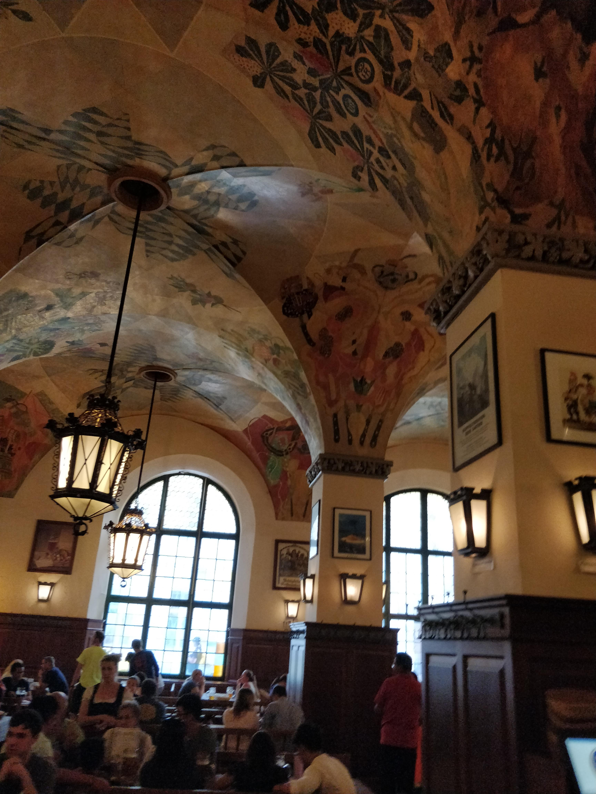

The Munich Experience
March 20, 2021
First Time in Munich
I have been to Munich three times in my life. The first time was on a high school trip in 2008. In grade 10 my school organized a trip to Europe. It was amazing for us at the time. We visited Germany, Austria, Switzerland, and Italy. Some of us left after that but part of the group continued onto Paris as well. One of the stops was Munich and it was my favorite spot on the trip. I remember really feeling comfortable there. We would have free time during the day, and it was easy to get around and find my bearings. We went to the main restaurant and biergarten the Hofbrauhaus and we also did a day trip to the Neuschwanstein castle which is what the Disney castle was designed from.

Inside the Hofbrauhaus
I didn’t really think about going to Germany for awhile then during university I found out I was eligible to get a German passport, so I called my Grandpa up to see what we had to do.
I started the process to apply for my German passport in 2014. I didn’t end up getting all the paperwork and applying for it until the summer of 2017. I wanted to move to Germany after I got the passport to try and learn the language and experience the culture. My grandpa spoke German and had dual citizenship his whole life so that is how I got the passport through the heritage.
 My two passports
My two passports
Second Time in Munich
In the spring of 2018, I decided to do a two week trip to Europe with my sister who was living in the UK at the time. I wanted to go to Germany and check it out again since I hadn’t been since high school. I thought doing a trip before I moved would be a good idea. In the two-week trip we did London, Athens, Istanbul and our last stop was Munich because it is where I wanted to visit. This trip to Munich was amazing and we met some amazing people and it inspired me to move to Germany.
We checked into Wombats hostel in the city center right beside the central train station. It has a nice layout and atmosphere there. When we checked in, I met a guy from Calgary who was living in Munich who was working at the hostel. He recognized the shirt I was wearing. It was a Big Rock Brewery shirt which is from Calgary, so it was kind of funny we were both from Calgary.
There was a hostel bar there that we went to after we got settled in. It didn’t take long for us to meet some people. We met a couple of guys from the US and got along quickly. We decided to go out for some beers and we went to a random biergarten and got one litre beers. The one litre beers can be hard to handle but usually only need to drink one. The glass they serve them in are quite large, so they don’t warm up too fast but still have to drink them quick enough, tough problem.
 Couple frost bews at the Hofbrauhaus
Couple frost bews at the Hofbrauhaus
The next night we went to the English garden and hung out by the river there and did some swimming. In Munich they have river surfing were the water weirs and river surfing was invented in Munich. The English Garden in Munich is massive has a lot of landscape to see. In the English Garden there is the Chinese biergarten to have beer and food. It is a pretty big biergarten too, so it makes for a pretty good time.
 River surfing
River surfing
 English Garden
English Garden
 Chinese biergarten in the English Garden
Chinese biergarten in the English Garden
I heard about the Science Museum in Munich from the Lonely Planet app and thought it looked interesting. I wanted to check it out, but we ended up just hanging out in the English Garden for the day having a chill day. Which is always nice too. I didn’t know much about the museum so wasn’t a big deal to miss it.
Third Time in Munich
After I got back to Canada from this trip it was clear I was going to move back to Germany. At first, I was pretty set on Munich but in reality, I decided to tour around Germany when I first get there and decide the best spot to live. I ended up living in Cologne Germany. I have a lot of stories from when I lived there but this story is about Munich. I was planning on moving back to Canada, but I decided I had to see the Science Museum in Munich. It was important to me, so I booked a quick trip to Munich solely to see the science museum.
I stayed at the same hostel since I knew it and I saw the same guy who was from Calgary he didn’t remember me but after I refreshed his memory he remembered and was still living there obviously so his expat experience was working out so that was nice.
This trip was another great time, I met a lot of people and really connected with them. Sometimes the places I visit I meet no one or maybe one person but others I can meet a good amount of people and it really makes for a great trip. I drank beer at the same hostel bar went to the various biergartens, Hofbrauhaus of course and Augustiner biergarten which is another famous one.
 Solo beer at the Hofbrauhaus on the third visit to Munich
Solo beer at the Hofbrauhaus on the third visit to Munich
I went to the museum and it was totally worth it! It topped off my whole living in Germany experience. I will definitely go back to this museum in the future. I was thinking I should have gone two days to the museum while I was there. There is so much to see, and you can’t see it all in one day anyways. I was there for about 3 hours and that was my limit for sure.
 Science Museum
Science Museum
Future Munich Visits
I am currently living in Deggendorf which is close to Munich so I should be able to experience the biergartens and the museums in the future. If you are ever in Munich, I definitely recommend the Hofbrauhaus, the Science Museum and the Neuschwanstein castle.